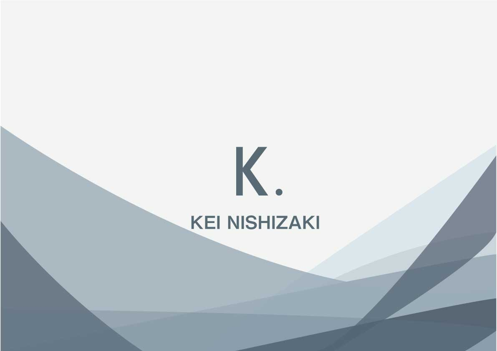
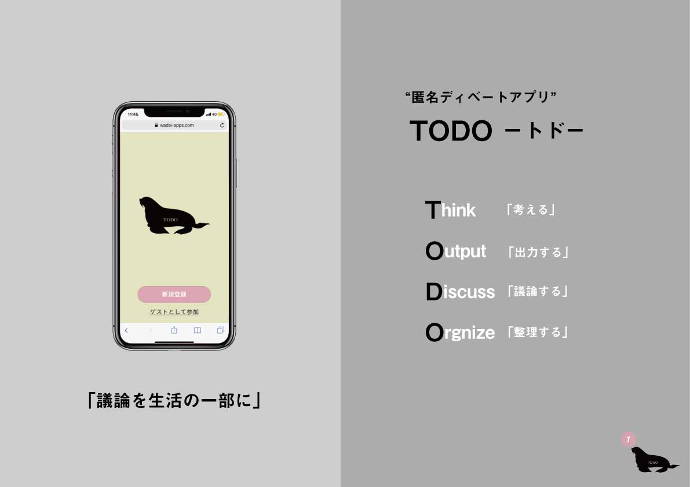
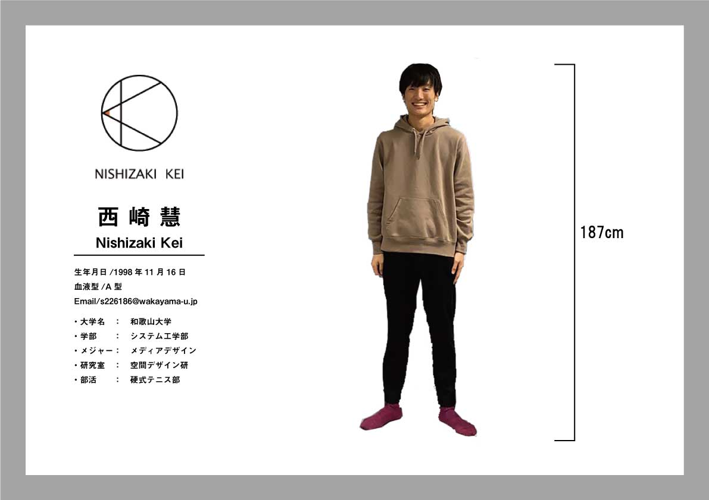
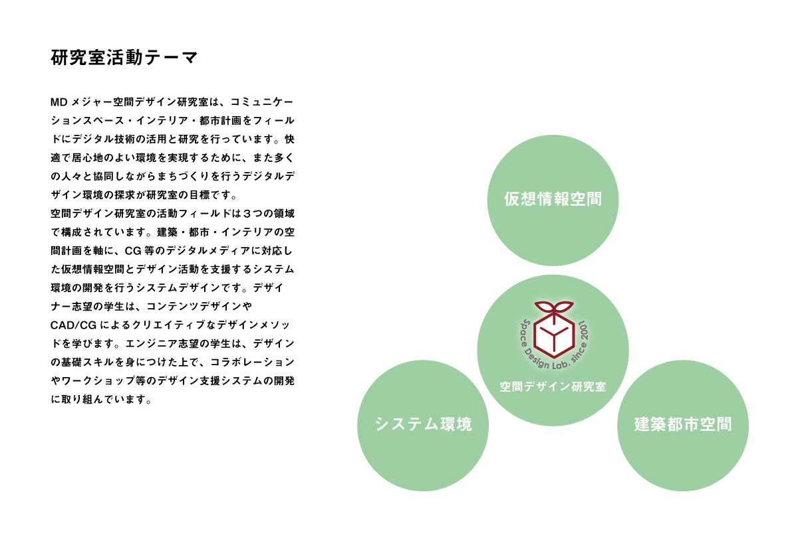
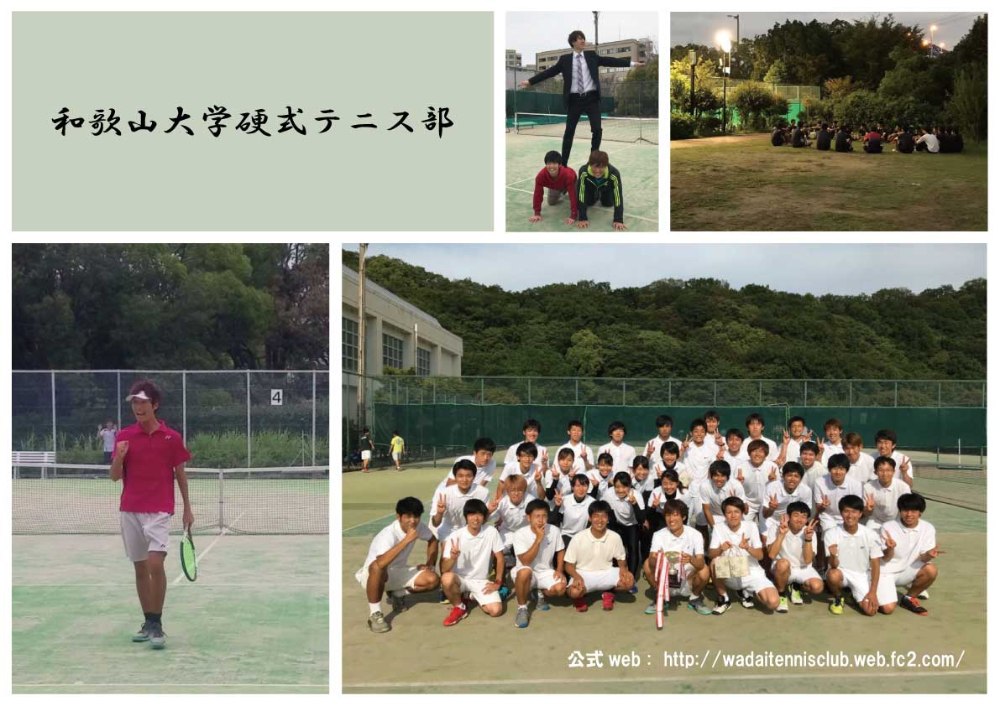

<!DOCTYPE html>
<html></html>


    <head>

        <title>NISHIZAKI　KEI</title>
        
        <meta charset="UTF-8">
        <link href="css\indexstyle.css" rel="stylesheet" type="text/css" media="all" />
        <link href="https://fonts.googleapis.com/css2?family=Economica&display=swap" rel="stylesheet">

        <script type="text/javascript" src="js\about.js"></script>
        <!-- <script type="text/javascript" src="js\workskip.js"></script>
        <script type="text/javascript" src="js\min.js"></script> -->
        <script type="text/javascript" src="js\roop.js" defer></script>

        <!--modai機能のjs引用-->
        <script src="https://cdnjs.cloudflare.com/ajax/libs/lightbox2/2.7.1/js/lightbox.min.js" type="text/javascript"></script>
        <!--アニメーション-->
       <!-- Lightbox -->
        <!-- <script src="https://cdnjs.cloudflare.com/ajax/libs/lightbox2/2.7.1/js/lightbox.min.js"></script> -->

        <!-- アニメーション用 JavaScript（外部ファイル）-->
        <script src="js/startWindow.js"></script> <!-- パスは環境に合わせて修正 -->
        <!--ChatBot-->
        <script src="./js/chatbot.js"></script>
    


    </head>
    
    <header>
        <!-- <div id="cursor" class="cursor" style="opacity: 1; top: 450px; left: 2848px;"></div> -->
        <div id="about"><!--最初は非表示-->


                    
                <div id="aboutInner" class="cf">
                    <dl>
                        <dt class="font">PROFILE :      </dt>
                    
                        <dd>西崎慧　　Nishizaki　Kei<br>
                            和歌山県和歌山市　出身<br>
                            和歌山大学システム工学部メディアデザインメジャー　卒業<br>
                        </dd>
                        
                        <dt class="font">CONTACT :      </dt>
                        <dd><a href="mailto:nszkki.19981116@gmail.com" target="_blank">nszkki.19981116@gmail.com</a></dd>
                        
                        <dt class="font">ADDRESS :      </dt>
                        <dd class="last">大阪府大阪市<br>
                        Osakashi, Osakafu Japan</dd>

                    </dl>

                    <div class="right"></div>

                </div>


        </div>
    </header>

      <body>

        <div id ="wrapper">
            <div id = "header">
    
                <h1 id="logo"><a href="index.html"></a></h1>
                <div id="btnAbout" class="font">
                <a href="javascript:clickBtn1()">About</a><!--about.jsから関数を呼ぶ-->
                </div><!--aboutボタンを押すとプロフィール表示する-->

                <div id="btnClose" class="font">
                <a href="javascript:clickBtn1()">Close</a><!--about.jsから関数を呼ぶ-->
                </div><!--closeボタンを押すとプロフィール非表示する-->


            </div><!-- /#header -->

            <!--作品を書く-->

            
        <div id="container">

                <div id="articleContainer">
                  <div class="section" id="section1"> 
                    <div class="mv_title-top slide-in-left"> <!-- mv_title-top を追加 -->
                      <p class="site_title">This is Kei Nishizaki's<br>Portfolio Website</p>
                      <div class="typed_wrap">
                        <p>
                          <span id="typed-text" class="typed" data-text="I am a growing system integrator since 2021."></span>
                        </p>   
                      </div>  
                    </div>
                    <div class="mv_img fade-zoom-in">
                      
                    </div>
                  </div><!--section1-->
                     

                      <div class="section" id="section2"> 
                        <div class="mv_title">
                          <p class="site_title">Skills</p>
                          <div class="typed_wrap">
                            <p><span class="typed">私のできること</span></p>
                          </div>  
                        </div>

                        <div class="skill-inner">
                          <div class="skill-contents">
                            <div class="skill-icon">
                              
                            </div>
                            <h2>デザイン</h2>
                            <p class="skill_desc">大学時代にAdobeツールを利用しコンペへの参加を実施していた。業務内でも画面デザインを担当したこともある。</p>
                            <div class="tool-inner">
                              <p class="tool">使用ツール</p>
                              <p>Figma / XD / Illustrator / Photoshop など</p>
                            </div>
                          </div>

                          <div class="skill-contents">
                            <div class="skill-icon">
                              
                            </div>
                            <h2>コーディング</h2>
                            <p class="skill_desc">業務では主にjavaを用いたシステム開発が多かった。その他の言語についても業務や大学の授業を通じて学んだ。</p>
                            <div class="tool-inner">
                              <p class="tool">プログラム言語</p>
                              <p>HTML / CSS / javascript / Java / Python / C#　など</p>
                            </div>
                          </div>

                          <div class="skill-contents">
                            <div class="skill-icon">
                              
                            </div>
                            <h2>資格取得</h2>
                            <p class="skill_desc">勉強すること自体は比較的嫌いではなく、若いうちにできる時にといったモチベーションで資格取得に励んでいる。</p>
                            <div class="tool-inner">
                              <p class="tool">資格一覧</p>
                              <p>応用情報技術者 / 情報処理安全確保支援士 / AZ-104 / Webデザイン技能検定3級 / 日商簿記3級　など</p>
                            </div>
                          </div>
                        </div>
                      </div>


                      <div class="section" id="section3">
                          
                          <div class="mv_title">
                              <p class="site_title">Carrer</p>
                              <div class="typed_wrap">
                                  <p>
                                  <span class="typed">今までの経歴 </span>
                                  </p>   
                              </div>  
                          </div>
                          <ul class="timeline">
                              <li>
                                <p class="timeline-date">2021.03</p>
                                <div class="timeline-content">
                                  <p class="timeline-content-sentence">
                                    和歌山大学システム工学部メディアデザインメジャーを卒業。<br>情報工学とそれを魅せるためのデザインについて勉強した。また大学生活ではコンペ活動や硬式庭球部の活動を積極的に参加した。
                                  </p>
                                </div>
                              </li>
                              <li>
                                <p class="timeline-date">2021.04</p>
                                <div class="timeline-content">
                                  <p class="timeline-content-sentence">
                                    インフォコム株式会社へ入社し、エンタープライズ事業本部TGシステム部へ配属。<br>
                                    大手メーカー企業向けのSIerとしてシステム開発やIT支援といった業務を経験していくこととなる。
                                  </p>
                                </div>
                              </li>
                              <li>
                                <p class="timeline-date">2021.09</p>
                                <div class="timeline-content">
                                  <p class="timeline-content-sentence">
                                    主に開発担当者として約2年間で複数プロジェクトにアサインされた。<br>
                                    並行して開発プロセスの経験ということで担当範囲を複数担った。
                                  </p>
                                </div>
                              </li>
                              <li>
                                <p class="timeline-date">2022.07</p>
                                <div class="timeline-content">
                                  <p class="timeline-content-sentence">
                                    商圏拡大を目的とした取り組みとして商社システム部へ半常駐支援の主担当となった。<br>
                                    結果として案件の拡大や支援体制の増員といった形で新規顧客獲得のきっかけ作りに繋がった。
                                  </p>
                                </div>
                              </li>
                              <li>
                                  <p class="timeline-date">2023.06</p>
                                  <div class="timeline-content">
                                    <p class="timeline-content-sentence">
                                      3年目で初めてのプロジェクトリーダーを担当した。<br>
                                      ベテラン社員のフォローがありつつも大規模案件を成功させることができ、大きな自信となった。
                                    </p>
                                  </div>
                                </li>
                              <li>
                                <p class="timeline-date">2025.04</p>
                                <div class="timeline-content">
                                  <p class="timeline-content-sentence">
                                      所属している会社が2度のM&Aをされたことをきっかけに今後のキャリアについて改めて考えなおすきっかけとなった。
                                  </p>
                                </div>
                              </li>
                            </ul>
                        </div><!--section3-->

                        <div class="section" id="section4">
                          <div class="mv_title">
                            <p class="site_title">Contents</p>
                            <div class="typed_wrap">
                              <p><span class="typed">本サイトでは各ページに多くのコンテンツを準備しています．</span></p>
                            </div>
                          </div>

                          <div class="slider-container">
                            <div class="slider-wrapper">
                              <div class="slide"><a href="index.html"><div class="caption">Title - 西崎慧のWeb紹介</div></a></div>
                              <div class="slide"><a href="works.html"><div class="caption">Works - 制作した作品集</div></a></div>
                              <div class="slide"><a href="Identity.html"><div class="caption">Identity - 西崎慧について</div></a></div>
                              <div class="slide"><a href="labolatory.html"><div class="caption">Laboratory - 空間デザイン研究室</div></a></div>
                              <div class="slide"><a href="club.html"><div class="caption">Club - 硬式テニス部</div></a></div>
                            </div>

                            <button class="nav prev">‹</button>
                            <button class="nav next">›</button>
                          </div>
                        </div><!--section4-->

                        <div class="section" id="section5">

                        </div><!--section5-->

                        <div class="section" id="section6">
                                 
                         </div><!--section6-->

                        <div class="section" id="section7">
                            
                        </div><!--section7-->

                        <div class="section" id="section8">
                           
                        </div><!--section8-->

                        
                        <div class="section" id="section9">
                                      
                         </div><!--section9-->

                        <div class="section" id="section10">
                                
                        </div><!--section10-->

                        <div class="section" id="section11">
                            <!-- このsectionはfunction:up()が10の時戻るときのために空で必要 -->
                        </div><!--section10-->


        </div><!--articleContainer-->
      </div>


        <ul id="gnav" class="font">
            <li><a href="index.html">Home</a></li>
            <li><a href="projects.html">Projects</a></li>
            <li><a href="Identity.html">Humanity</a></li>
            <li><a href="labolatory.html">University</a></li>
            <li><a href="club.html">Other</a></li> 
        </ul>

            
          </div><!--/#container-->
                                            

        </div><!--/#wrapper-->


        <div class="chat-Container">
          <!-- ランチャーボタン -->
          <button class="chat-launcher" id="chat-launcher" type="button"></button>

          <!-- チャットウィンドウ -->
          <div class="chat-box" id="chat-box" style="display: none;">
            <div class="chat-header">
              AI ChatBot
              <button class="close-button" id="close-button">×</button>
            </div>
            <div class="chat-messages" id="chat-messages"></div>
            <div class="chat-input">
              <input type="text" id="user-input" placeholder="質問してください..." />
              <button id="send-button" type="button">送信</button>
            </div>
          </div>
        </div>

      </div>

        <div class="col">
            <a href="#top" class="scroll-up-box mr-120" id="page-top">
                TOP
            </a>
        </div>
        


        </body>
        

        <footer>
          <p>&copy; 2025 Kei Nishizaki. All rights reserved.</p>
        </footer>


</html>